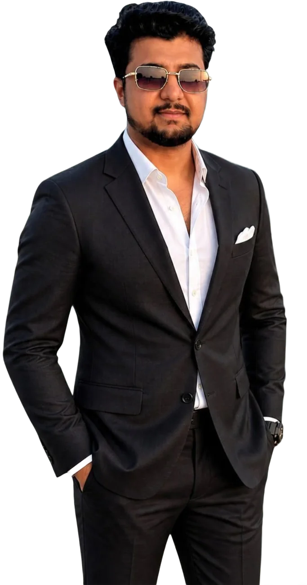
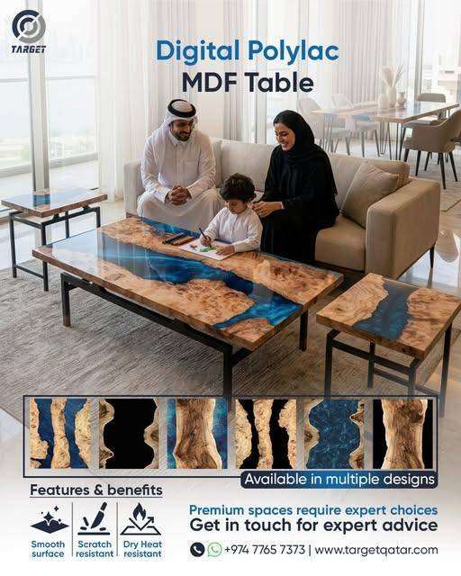
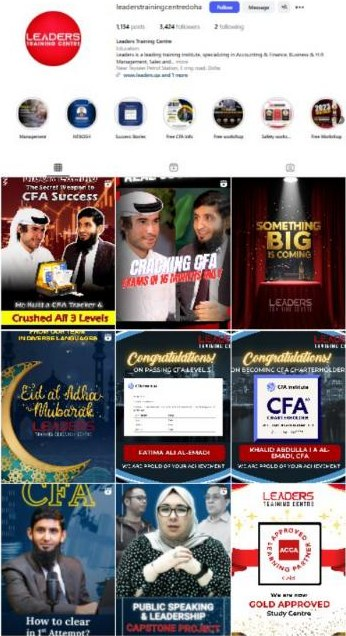
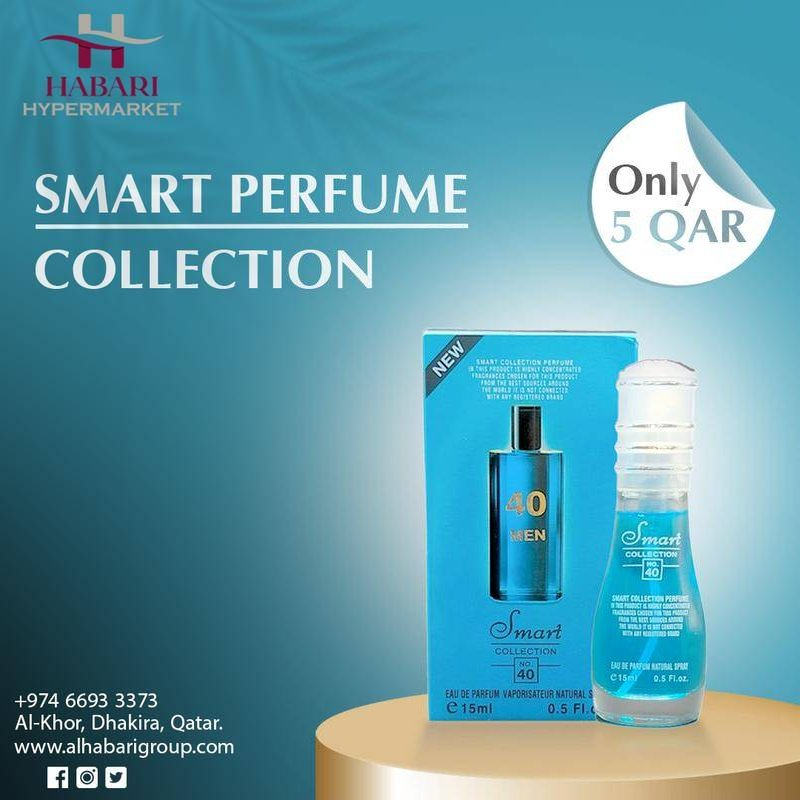

Paid Advertising
Campaigns that reach the right audience and bring relevant enquiries.
- Google Ads
- Search campaign strategy
- Meta Ads
- Audience targeting
- Campaign optimization
- Lead generation campaigns
Digital Marketing | Brand Growth | Creative Strategy
I'm Awais Rustam, a Marketing Specialist working across digital advertising, lead generation, brand awareness, and creative content. I combine strategic thinking with hands-on execution to help businesses reach the right audience and build stronger brands.

Planning and executing digital marketing activities aligned with brand awareness, lead generation, and business objectives.
Combining audience targeting, paid campaigns, creative communication, and ongoing optimization to attract relevant prospects.
Bringing together advertising, graphic design, content creation, and performance analysis to support effective marketing.
I'm Muhammad Awais Rustam Malik, a Marketing Specialist working in Qatar. I started my career in digital marketing in 2019, and since then my work has sat where strategy meets day-to-day execution: planning campaigns, running paid advertising, producing the creative and following through on the leads it brings in.
Today I work at Target Trading and Contracting, within the Target business structure that includes Target Furniture Factory and Target Metal Forming. I joined as Digital Marketing Executive and moved into my current role as Marketing Specialist, supporting marketing for furniture, wood-related and stainless steel products.
Before that I was Digital Marketing Manager at Leaders Training Center from June 2024 to May 2025, where I looked after SEO, Google Ads, social media, lead generation, content, design, video, email and WhatsApp broadcasts, and the marketing budget.
My approach is simple: understand what the business needs, reach the people who matter, communicate clearly, and judge the work by outcomes rather than clicks.
Six areas I work across every week. No percentages, just the work itself.
Campaigns that reach the right audience and bring relevant enquiries.
Helping people find the business on Google and in AI answers.
Consistent, recognisable communication across social channels.
Designing and editing the creative myself, so ideas reach the market quickly.
Keeping the conversation going after the first click.
Reading the numbers and turning them into the next decision.
Each project shows the objective, the challenge, what I was responsible for and how I approached it. Verified results are marked; everything else is described qualitatively.

Bringing relevant B2B enquiries to a furniture and wood-products business in Qatar through Meta advertising, clear product communication and careful audience targeting.
Read case study
Running the full digital marketing function for a training business, from SEO and Google Ads to social media, content, video and lead generation.
Read case studyHow I structure search campaigns: keyword intent, campaign structure, conversion tracking and ongoing optimisation.
Read case study
Marketing graphics, social media creatives and promotional campaigns for brands across furniture, retail, real estate, food and training.
Read case studyTarget Trading and Contracting · Qatar
Marketing activities connected with Target Furniture Factory and Target Metal Forming, within a business structure that covers furniture, wood-related products and stainless steel products.
Leaders Training Center · Qatar
Al Habari Group & My Daar Real Estate · Qatar
Marketing agencies
Certificates I have completed. Click one to view it, or follow the credential link to verify it.
Google Skillshop · Issued Sep 2026 · Expires Sep 2027 · ID 195372515
Coursera · Sep 2026
Verify credential for Google Ads for Beginners (opens in a new tab)Coursera · Sep 2026
Verify credential for Search Engine Optimization (SEO) with Squarespace (opens in a new tab)Coursera · Sep 2026
Verify credential for Building a Business Presence With Facebook Marketing (opens in a new tab)Coursera · Sep 2026
Verify credential for Digital Business Marketing with Easil (opens in a new tab)Coursera · Sep 2026
Verify credential for Business Analysis & Process Management (opens in a new tab)Effective marketing is not only about generating clicks or collecting enquiries. It starts with the business objective, reaches relevant audiences, communicates value clearly, measures outcomes that matter, and improves based on evidence.
Start with the business objective, the product and who actually buys it, before choosing a channel.
Set the audience, message, channels and budget around that objective, with clear measures of success.
Build the campaigns, produce the creative and keep communication consistent across every touchpoint.
Look past clicks to enquiry quality, follow-up and the outcomes the business cares about.
Adjust targeting, creative and budget based on evidence, then repeat.
A B2B prospect is not automatically a poor lead just because they are not ready to buy today. Relevance, project timing, product interest and genuine buying signals matter too. A contractor planning a fit-out six months from now can be one of the most valuable enquiries a campaign brings in, as long as the follow-up keeps the conversation alive.
Short, straight answers to the questions business owners in Qatar ask most, based on the campaigns I work on.
Digital marketing is promoting a business through online channels, such as Google search, social media, email, WhatsApp and websites, to reach buyers, generate leads and drive sales that can be measured.
For most businesses in Qatar, Meta Ads (Instagram and Facebook) and Google Ads bring the most leads, with WhatsApp as the main follow-up channel. B2B companies also benefit from Google Search and LinkedIn.
Set your ad budget from your lead target: multiply the number of leads you need each month by your target cost per lead, then split it between channels based on where your buyers search and scroll.
SEO helps your website rank in Google’s results, AEO (answer engine optimisation) helps your content become the direct answer in featured snippets and voice search, and GEO (generative engine optimisation) helps AI tools like ChatGPT, Gemini and Perplexity mention and cite your brand.
The trends that move results today are AI search visibility, AI-assisted creative testing, short-form video, WhatsApp conversations, and first-party data with privacy-safe tracking.
Digital marketing is working when cost per qualified lead falls and the share of leads that become customers rises. Track CPL, lead-to-sale ratio and return on ad spend every week, not just clicks and likes.
Hire a specialist when you want one senior person who plans, runs and designs your campaigns and reports directly to you; choose an agency when you need a large team across many services at once.
Muhammad Awais Rustam Malik is a Marketing Specialist working in Qatar, in digital marketing since 2019. He works at Target Trading and Contracting across paid advertising, lead generation, brand awareness and creative content, and was previously Digital Marketing Manager at Leaders Training Center.
Paid advertising on Google Ads and Meta Ads, search engine optimisation, social media and brand awareness, creative production and graphic design, email and WhatsApp communication, and campaign measurement and reporting.
I combine targeted Meta and Google campaigns with clear product communication and prompt follow-up, then assess each enquiry for relevance, project timing and genuine buying signals before treating it as a strong or weak lead.
At Leaders Training Center I managed lead-generation budgets of QAR 45,000 for social media and QAR 15,000 for Google Ads.
Meta Ads Manager, Google Ads, Google Analytics, HubSpot, SEMrush, Ahrefs and YouTube Studio for marketing, and Adobe Photoshop, Illustrator and Canva for creative.
I work in Qatar. You can reach me by email, WhatsApp or LinkedIn from anywhere.
Yes. I design social media posts, ad creatives, flyers and brand assets myself. You can see examples on my design portfolio page.
Use the contact form on this page, email awaisrustam001@gmail.com, or message +974 3337 0737 on WhatsApp.
I'm interested in connecting with professionals and businesses who value thoughtful marketing, creative execution, and measurable business outcomes.